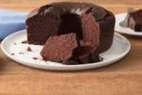
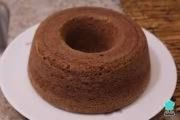

Bolo de chocolate da Vovó
INGREDIENTES
Massa:
- 4 ovos
- 4 colheres (sopa) de chocolate em pó
- 2 colheres (sopa) de manteiga
- 3 xícaras (chá) de farinha de trigo
- 2 xícaras (chá) de açúcar
- 2 colheres (sopa) de fermento
- 3 xícaras (chá) de leite
Calda:
- 2 colheres (sopa) de manteiga,/LI.
- 7 colheres (sopa) de chocolate em pó
- 2 latas de creme de leite com soro
- 2 colheres (sopa) de manteiga
- 3 colheres (sopa) de açúcar
MODO DE PREPARO
Massa:
- Em um liquidificador, adicione os ovos, o chocolate em pó, a manteiga, a farinha de trigo, o açúcar e o leite.
- Bata tudo por 5 minutos.
- Adicione o fermento e misture, delicadamente, com uma espátula.
- Em uma forma untada, despeje a massa e asse, por cerca de 40 minutos, em forno médio (180°) preaquecido.
Calda:
- Em uma panela, aqueça a manteiga e misture o chocolate em pó até que esteja homogêneo.
- Acrescente o creme de leite e misture bem até obter uma consistência cremosa.
- Desligue o fogo e acrescente o açúcar.